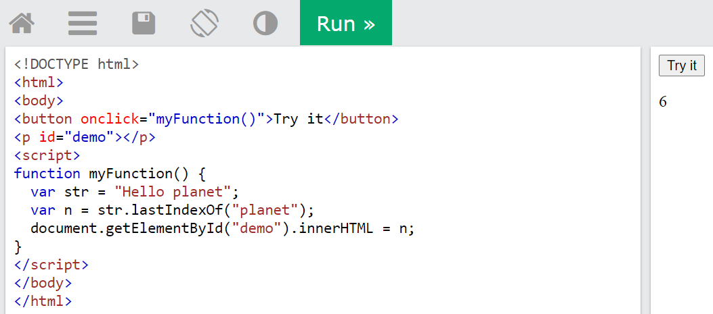

The lastIndexOf() method returns the position of the last occurrence of a specified value in a string.
Note: The string is searched from the end to the beginning, but returns the index starting at the beginning, at position 0.
This method returns -1 if the value to search for never occurs.
Note: The lastIndexOf() method is case sensitive!
